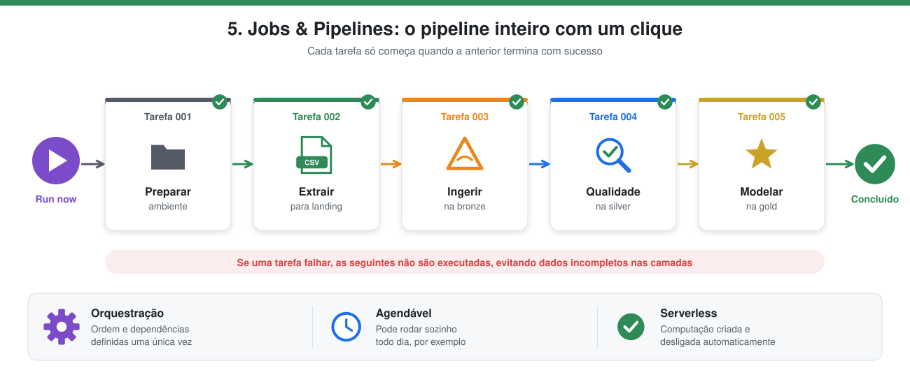
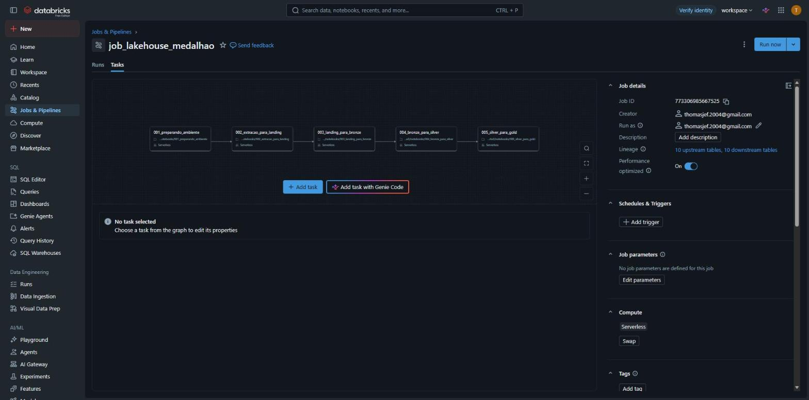
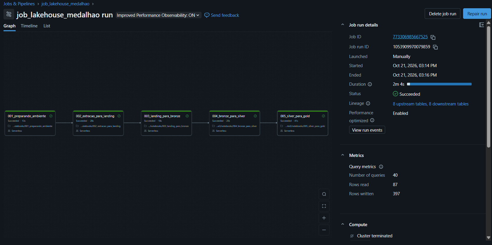
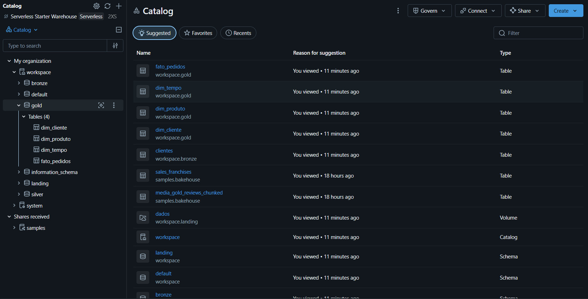

5. Jobs & Pipelines

Em poucas palavras: em vez de abrir e rodar cada notebook manualmente, o Job funciona como uma linha de produção: aperta-se um botão e ele executa todas as etapas na ordem certa. Se alguma etapa der erro, as seguintes não rodam, para não gerar dados incompletos.
| Condição | O que significa |
|---|---|
| Execuções encadeadas em uma JOB | Os 5 notebooks são tarefas de um único Job (job_lakehouse_medalhao). |
| Cada etapa executada sequencialmente | Cada tarefa depende da anterior (depends_on): 001 → 002 → 003 → 004 → 005. |
O que é um Job
Jobs & Pipelines é o orquestrador do Databricks. Um Job reúne várias tarefas (aqui, notebooks) e define a ordem e as dependências entre elas. Assim o pipeline inteiro roda com um clique, ou por agendamento, sem executar notebook por notebook, e uma etapa só começa se a anterior terminar com sucesso.
O Job job_lakehouse_medalhao
Cada tarefa depende da anterior (depends_on), formando a sequência da arquitetura medalhão:
001_preparando_ambiente → 002_extracao_para_landing → 003_landing_para_bronze → 004_bronze_para_silver → 005_silver_para_gold
| Tarefa | Notebook | Etapa |
|---|---|---|
| 1 | 001_preparando_ambiente |
Schemas e volume |
| 2 | 002_extracao_para_landing |
Extração do PostgreSQL externo → LANDING/DADOS (CSV) |
| 3 | 003_landing_para_bronze |
Ingestão → BRONZE (Delta) |
| 4 | 004_bronze_para_silver |
Data Quality → SILVER |
| 5 | 005_silver_para_gold |
Modelagem dimensional → GOLD |
Todas as tarefas usam computação serverless. A definição do Job está em resources/job_medalhao.json e pode ser recriada em Jobs & Pipelines → Create job → Edit as JSON. O notebook 006_destruindo_ambiente fica fora do Job, pois só serve para limpar o ambiente.
Os dados de conexão do banco externo são parâmetros do Job (pg_host, pg_port, pg_database, pg_user, pg_password, pg_schema). No JSON versionado a senha é só um marcador; o valor real é preenchido no Databricks.

Execução
Execução completa com sucesso: as 5 tarefas em sequência, em 2m 4s, partindo do ambiente vazio (após o 006), extraindo os dados do PostgreSQL externo (Supabase).
| Tarefa | Status | Duração |
|---|---|---|
| 001_preparando_ambiente | Succeeded | 13s |
| 002_extracao_para_landing | Succeeded | 28s |
| 003_landing_para_bronze | Succeeded | 18s |
| 004_bronze_para_silver | Succeeded | 20s |
| 005_silver_para_gold | Succeeded | 41s |

Resultado no catálogo
Depois da execução, o catálogo workspace contém os schemas landing, bronze, silver e gold (a origem fica fora do Databricks):
